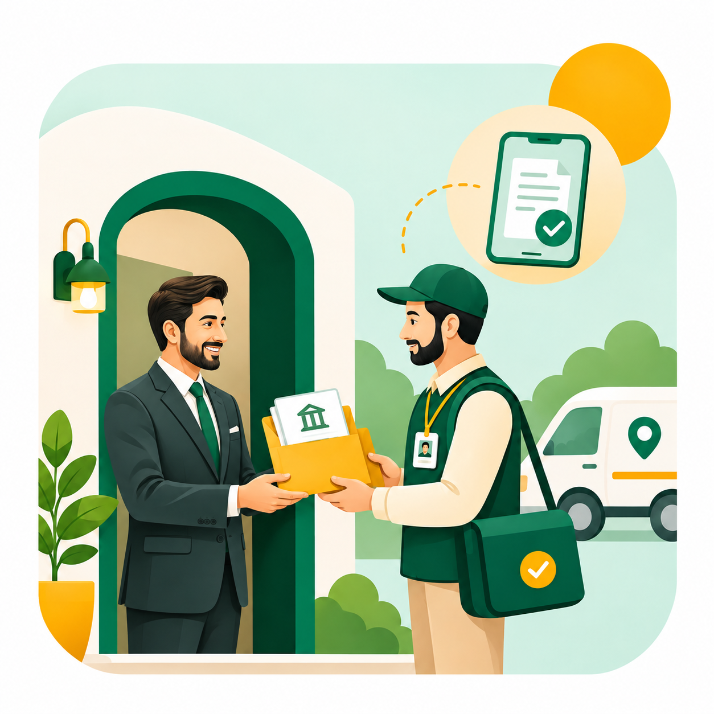

Driving Licence
Learner permits, renewals, duplicates and international permits.
 WhatsApp
WhatsAppYour documents. Your doorstep.
Get help with driving licenses, vehicle transfers and government documents in Gujar Khan and Rawalpindi.

DOCUMENT HELP, CLOSE TO HOME
Choose a service group, then select the document you need.
Learner permits, renewals, duplicates and international permits.
Registration, ownership transfer and token tax assistance.
Character certificates, verification, registration and reports.
Domicile, e-stamps and civil registration documents.
Browse all services · Ask for document guidance · Official Dastak service catalogue
FROM YOUR FIRST CALL TO YOUR DOCUMENT
Contact us via WhatsApp or phone at 0345-5583530. Share your required document service and confirm your appointment.
A registered facilitator arrives at your doorstep to review your documents and complete the required application steps.
Your application is processed through official government portals. Receive your tracking ID and, after department approval, your completed document.
IN OUR CUSTOMERS’ WORDS
I had an excellent experience using the Dastak App for my domicile application. Since I had no prior knowledge or experience regarding the required documents, application process, or where to go, I was initially quite unsure about how to …
⭐⭐⭐⭐⭐ Excellent Guidance and Professional Support I really appreciate the excellent guidance and support provided by my friend …
Mr. Usman is very polite, professional, and friendly. He is extremely helpful and always willing to assist. I truly appreciate his excellent service and support.
I had a great experience using the Dastak app to apply for my Police Character Certificate. The process was smooth, and the person who handled my application was very professional, cooperative, and helpful. I truly appreciate the excellent service and professional attitude. Keep up the good work!
Very professional and helpful Dealing. He listened to my driving license issue patiently and helped me a lot in getting it resolved.
Such a great service. Very cooperative staff. Best service in Pakistan
Your service is very well & works behavior is so nice
Alhamdulillah, I renewed my and my brother's driving license through the Dastak App and had a wonderful experience. …
My perspective has been altered by your timely competent service and I am proud to deal with some like you. Because of your diligence, integrity, and commitment to professionalism. You are the one who has transformed the perception of …
I renewed my license through Dastak facilitater and it was a very good experience very good and helpfull method very easy for all. And staff is very corporative one day my all needed document is ready
Very positive response from Muhammad usman with in 24 hours my appilaction registered and new license is issued
Polite, punctual, and highly knowledgeable. Usman guided me through every single requirement for my Renewal of driving license renewal.
I am really satisfied and surprised from Dastak rapid response
Very satisfied and polite behaviour of facilitator
I m a businessman I have short of time but Mr Usman Saved me from the usual office runarounds. Got my Domicile certificate within days on my doorstep without visiting any office.
Excellent Service
Very good
Very good experience The muavin was very kind and helpful
Best online learner's license facilitator in Rawalpindi
Great service, and very cooperative Best characters certificate online service in Gujar khan
Well 😊
An exceptionally gratifying experience with Dastak Online Document Facilitation, made all the more commendable by Usman’s exemplary assistance. …
Best domicile service in Gujar khan. No need to visit any office. Thanks to Mr Usman he is very Cooperative professional will to help every time.
Very good service, prompt response, and a smooth registration process.
Very good person
Service is very good
Remarkable service standards. Clear communication, proper tracking, and zero confusion throughout the process. Best service for license renewal and character certificate in Rawalpindi Gujar Khan and surrounding.
Good work Excellent ♥️
He guided me on every step regarding my domicile certificate. Authentic government document facilitation right at your doorstep. Transparent, courteous, and efficient.
Excellent 👌
I consider you to be a trustworthy and supportive person.
> The online license app is very helpful and easy to use. I applied for my license online without visiting the office. Process was smooth and fast. Excellent initiative by the government. Highly recommended! …
Very disciplined cooperative
Great service! I'm really satisfied with it.
The domicile certificate process was completely stress-free. Wonderful service, highly recommended to everyone.
Very positive response from Muhammad usman with in 24 hours my appilaction registered and new license is issued Thanks dear
Very good service and customer service very good and excellent.
Outstanding police character Certificate assistance. Everything was processed seamlessly without unnecessary delays. Great initiative thanks to Muhammad Usman very professional Recommended 100%.
Very professional and impressed Highly recommend
Good
I renewed my and my cousin driving license from Muhammad Usman he did it very fast and i received my driving license at my doorstep. Trusted and honest person.
It was really nice experience
Exceptional service! Got my driving license renewed without visiting any office. Facilitator 90807 was extremely polite and professional. Highly recommended
"Dastak app has really made life a lot easier. Applying for your job and getting service from home has now become child's play. The speed of the app and customer support are also very good. Highly commendable service!"
Thank you so much Sir Usman, because of you my work got done so quickly, I took your advice, I am very grateful to you. May Allah Pak salute you.
They gave very good and useful advice and have good morals. And provided a lot of convenience.
Amanat Ali Local Guide·6 reviews·38 photos 9 hours ago New
Good Service Gujar Khan Khidmat Markaz Spacially Muhammad Usman
Today I renewed my driving license through Maryam Ki Dastak Service. Alhamdulillah, it was a great experience. 😊 The service was also excellent and the attitude of the concerned person was also …
I renewed my license through Dastak facilitater and it was a very good experience very good and helpfull method very easy for all. And staff is very corporative one day my all needed document is ready
great and fast service Authentic
I renew my driving licence and its deliver and updated in few days....thanks recommended 100%
I renewed my and my brother's driving license online through the Dastak App, and believe me, it has an excellent system. Your application is processed immediately. A representative contacts you on your registered WhatsApp number and you can send all your required documents right there. Within 8 to 10 hours your application is submitted and you get a positive response as well …
Facebook rating and recommendations supplied by the business owner on 17 November 2026. Some reviews are excerpts; individual experiences and processing times vary.
Doorstep visits cover Gujar Khan, Rawalpindi, Mandra, Bewal, Daultala, Sukho, Jatli, Kallar Syedan, Qazian and Kahuta. Contact me to check availability at your address.
Maryam Ki Dastak is a Government of Punjab initiative delivering public services to your doorstep. Official Facilitator Muhammad Usman (Code: 90807) handles document verification and online submission in Gujar Khan, Rawalpindi, and across Punjab. Book via the Dastak App (dastak.punjab.gov.pk) or WhatsApp 0345-5583530.
You can verify Muhammad Usman (Facilitator Code 90807) anytime by calling the official Government of Punjab Maryam Ki Dastak helpline at 1202 or checking the official portal (dastak.punjab.gov.pk). All applications are processed strictly through verified government channels with complete data privacy.
Through Maryam Ki Dastak (Code: 90807), you can renew your regular Punjab driving license, update a learner permit, or apply for a duplicate or international license without visiting a traffic office. Contact Muhammad Usman on WhatsApp at 0345-5583530 for doorstep verification across Gujar Khan, Rawalpindi, and nearby tehsils.
Under Code 90807, we verify your vehicle file, generate official Punjab Excise PSID payment challans, and submit ownership transfer or token tax requests online. We also guide both buyer and seller through mandatory biometric verification in Gujar Khan and Rawalpindi for a smooth, queue-free transfer.
Avoid police station queues by booking through Facilitator Code 90807 or messaging 0345-5583530 on WhatsApp. We prepare your CNIC, passport, and supporting documents for official Punjab Police background verification, delivering your Police Character Certificate or Lost Report directly to you.
Muhammad Usman (Code: 90807) facilitates Punjab Domicile certificates and E-Stamp papers across Rawalpindi district and Punjab. We manage file preparation, data entry, and official tracking through Board of Revenue channels so you get your documents hassle-free.
LET’S GET YOUR DOCUMENTS SORTED
Sandal Road, Ward No. 14, Gujar Khan, Punjab 47850

I am Muhammad Usman, a verified citizen facilitation representative operating under the Government of Punjab’s flagship initiative, Maryam Ki Dastak (Facilitator Code: 90807).
Dastak Online Document Facilitation was established to eliminate paperwork frustration, administrative bottlenecks, and long queues for citizens. With attention to legal compliance, transparent fees, and biometric accuracy, we help you complete public documentation through official channels.
Contact us to confirm service availability and the next visit at your address.
About Muhammad Usman and registration verification ↗KNOW WHAT TO PREPARE
Practical answers for Gujar Khan, Rawalpindi and nearby communities.
Punjab licence renewal: documents, fees and tracking.
Read guidePolice character certificate preparation and verification.
Read guide